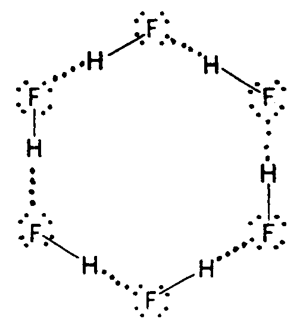
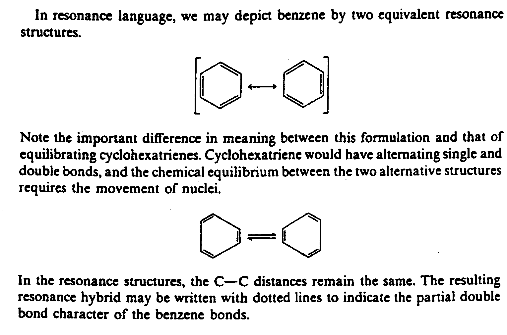
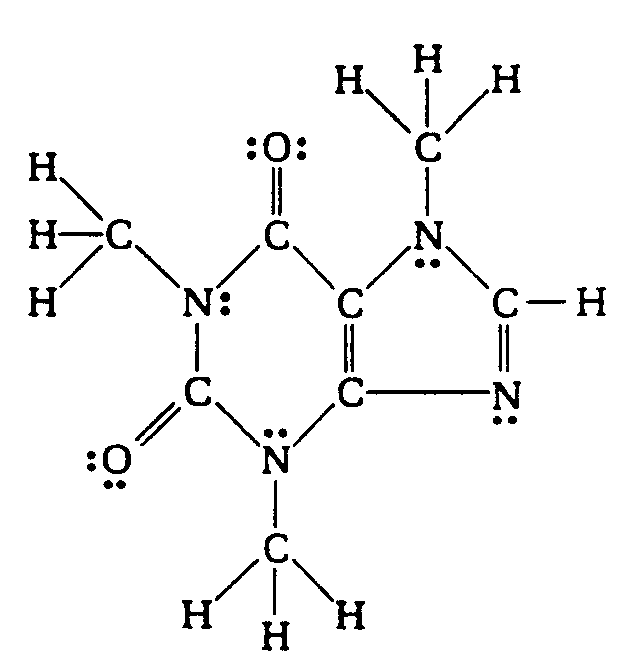
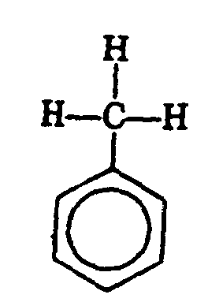

Braille Code of
Chemical Notation
1997
Home Index Search Chemistry
Rules
1. Braille Indicators
2. General Format
3. Signs and Symbols
4. Formulas/Equations
5. Labels
6. Type Forms
7. Super/Subscripts
8. Names
9. Abbreviations
Index of Symbols
Index
BRL Courses
Intro to Braille
Braille Transcribers
Specialized Codes
BRL Reference Desk
Summary of Rules
Contractions Lookup
Contractions List
Braille only contractions
Problem Words
Webster's Dictionary
Braille Formats (BANA rules for transcribing textbooks)
Reading List
Other Resources
Contact instructor
Flashcard program (Java)
Downloadable Software
Braille Supplies
Other Links
American Printing House for the Blind (APH)
Braille Authority of North America (BANA)
National Braille Association (NBA)
National Library Service (NLS, Library of Congress)
Credits
|
|
©hoose LANGUAGE bArd fr©Ide
Rule 4
- CHEMICAL FORMULAS AND EQUATIONS. Chemical formulas and equations may contain electron dots, bonds, mathematical operation and comparison signs, chemical arrows, and other notation.
4.1 Chemical Formulas
4.1.1 General Formula. An expression of the composition of a compound (or radical, etc.) by a combination of SYMBOLS and numerals to show the constituents, usually in exact proportion. The following are definitions of the different types of formulas.
4.1.2 Empirical Formula. A chemical formula which gives the composition of a compound but does not specify the structural arrangement or proportion.
Example 4.1.2-1: (empirical formula for benzene)
CH
,c,h
4.1.3 Molecular Formula. A formula which gives the composition of a compound but does not specify the structural arrangement or proportion.
Example 4.1.3-1: (molecular formula for benzene)
C6H6
,c6,h6
4.1.4 Structural Formula. A formula which illustrates the arrangement of the atoms and bonds in a molecule. Structural formulas are spatial arrangements and may contain "closed figures," called "cyclical" or "ring" structures.
Example 4.1.4-1: (benzene ring)
4.1.5 Electron Dot Formula (also known as Lewis Electron Dot Diagram). This is a formula which employs the SYMBOL of an element to represent the nucleus of an atom and all electrons except those in the outer level. Dots represent the outer level of electrons, drawn on the appropriate sides (top, bottom, left, right) or on the diagonal (upper left, upper right, lower left, lower right) of the SYMBOL.
Example 4.1.5-1:
The energy levels and orbital of Cd are:
Cd = 1s22s22p63s23p64s23d104p65s24d10
Outer electrons = 5s2
Dot Formula = Cd :
,! 5]gy levels & orbitals ( ,cd >e3
,cd
.k #1s^2"2s^2"2p^6"3s^2"3p^6"4s^2
,\t] electrons .k #5s^2
,dot formula .k ,cd?
Example 4.1.5-2: (structural diagram consisting of a combination of molecular bonds and electron dots)

4.2 Arrows The chemical arrows listed in Section 3.1 are for use in transcribing chemical formulas only. Various forms of arrows are often included in these formulas. It is imperative that the print form of the arrows be represented in braille. If double arrow combinations show one arrow heavier or longer than the other, the difference is significant and thus must be duplicated in braille.
4.2.1 Horizontal Arrows The symbols for horizontal arrows are those listed in the Nemeth Code. Added to this list are the horizontal dipoles (+ --> and <-- +). Except for dipoles and arrow bonds, horizontal arrows are signs of comparison and are spaced and punctuated in compliance with the Nemeth Code, Rule XX.
Example 4.2.1-1: (single, right-pointing arrow, normal barb)
Ca3(PO4)2 + 2H2SO4 --> Ca(H2PO4)2 + 2CaSO4
,ca3(,p,o4);2"+2,h2,s,o4
$o ,ca(,h2,p,o4);2"+2,ca,s,o4
Example 4.2.1-2: (double arrows, equal lengths, normal barbs)
,h2(g)+,i2(g) $io$]i #2,h,i(g
Example 4.2.1-3: (double arrows, equal lengths, half-barbs)
Example 4.2.1-4: (resonance and equilibrating arrows)

Example 4.2.1-5: (double arrows, different lengths, normal barbs)
Example 4.2.1-6: (double arrows, upper bold, normal barbs)
4.2.2 Vertical Arrows See the Symbols List, Section 3 of this Code. Vertical and oblique arrows are often used to facilitate the presentation of a 3-dimensional figure on a 2-dimensional page. The fact that these are not horizontal often has no chemical significance. It is preferable to use right- and left-pointing arrows if this will make the presentation easier to follow in braille. Normally, chemical equations are arranged in print from left to right and from top to bottom. The direction of the reaction from one component to another must be preserved. The arrow does not mean that the reaction proceeds from the particular element which precedes the arrow but from the entire construct. (See Example 4.2.2-5.)
Although up-pointing and down-pointing arrows are normally comparison signs, in a spatial agreement they occupy a line by themselves and no blank lines are left above or below unless required by other condiderations. Note: Up-pointing arrows representing vaporization and down-pointing arrows representing precipitation are not comparison signs. Such arrows must be transcibed unspaced from the SYMBOLS to which they apply and the print direction must be duplicated. These arrows and the SYMBOLS or compounds to which they apply must be placed on the same braille line. If an arrow is interior to the expression, a space must follow the arrow. (See Example 4.6-1.)
Example 4.2.2-1: (up-pointing, vaporization)
Example 4.2.2-2: (down-pointing, precipitation)
Example 4.2.2-3: (interior down-pointing, precipitation)
Example 4.2.2-4: (as comparison signs in spatial arrangement)
Example 4.2.2-5: (as comparison signs, print arranged for the convenience of the printer, normal direction in braille)
(In this example, the print shows the arrows wrapping in a loop, left to right, down, and then from right to left. In braille, the arrows are arranged to be read from left to right as is the normal reading direction.)
Example 4.2.2-6: (double vertical arrows with half-barbs)
Example 4.2.2-7: (vertical arrows pointing to a portion of a reaction)
4.2.3 Lead Lines and Lead Arrows. These must be represented as directed in Guidelines for Mathematical Diagrams. The brailled arrows must not be used.
Example 4.2.3-1: (lead arrows, direction required)
Example 4.2.3-2: (lead arrows, direction not significant)
Example 4.2.3-3: (directional arrows from and to operation arrows)
Example 4.2.3-4: (arrows showing displacement or substitution reactions)
Example 4.2.3-5 (arrows in electron configuratino [orbitals])
4.2.4 Dipole Arrow. The dipole arrow, denoting electron displacement, must be placed as in print as nearly as braille format permits. IF this arrow is verical or oblique, the plus symbol must be placed immediately above or below the SYMBOL to which is applies. If a bond is shown parallel and adjacent to the vertical or oblique arrow, the first symbol of the bond must be aligned with the plus symbol of the arrow. A print oblique dipole arrow is represented by the same symbol as the vertical dipole arrow.
Example 4.2.4-1: (oblique and horizontal dipole arrows with bonds)
4.2.5 Modification of Arrows. Arrows modified above and/or below may be transcribed spatially, or, by employing the rules of the Nemeth Code, horizontally. A judgement must be made as to the most easily understood method, depending on the material being transcribed. A spatial transcription is usually the best. If a modified arrow is represented spatially, the shaft of the arrow must be lengthened to accommodate the length of the modifier. The first cell of the arrow shaft. The final cell of the modifier must be placed immediately above/below the last cell of the shaft. If the arrow is modified both above and below and if the modifiers are of different lengths, the shorter modifier must be centered on the shaft.
If the modification of a single arrow is divided so that part of the modification appears above and part below the arrow, it is a printer's method of saving space. In braille, the modifiers may be completed above the shaft or placed as in print. (See Example 4.2.2-5.) The decision must be based upon the ease of reading. If the modifier is all above the arrow in print, follow the print.
In the event double arrows are modified, one above and the other below, the placement of the modifiers and the length of the arrows must conform to the print notation. If they are of equal length in print, the shafts of both arrows must be of the correct length to accommodate the longest modifier. The shorter modifier must be centered above or below the appropriate shaft. (See Example 4.2.5-2.)
Example 4.2.5-1: (single arrow, modified above)
(In Example 4.2.5-2, the arrows are on the diagonal in print to provide spacing between the different components. Diagonal and vertical arrows and bonds have no chemical significance in this example. These may be transcribed as horizontal arrows and bonds.)
Example 4.2.5-2: (double arrows, same length, each modified)
Example 4.2.5-3: (arrow modified by cacellation or negation)
4.2.6 Arrow Bonds. Occasionally arrows are used as bonds. Care must be taken to distinguish between arrow bonds and arrows used as comparison signs. If arrows occur between chemical compounds, they are comparison signs. IF they occur within a compound or structure, they are bonds. Context of surrounding material will help identify the purpose of the arrow.
Example 4.2.6-1: (two covalent and one coordinate covalent bond)
Example 4.2.6-2: (coordinate covalent bond)
Example 4.2.6-3: (arrow bonds within spatial structure)
Example 4.2.6-4: (oblique arrow bonds within spatial structure)
4.3 Electron Dot Bonds. Although all electron dots have the same chemical meaning, writers of textbooks use different types of dot notation to illustrate a point, trace transferred or shared electrons, denote free elctrons, etc. In braille, these differences must be maintained. If what appears to be a bold dot is used and a smaller dot is not used elsewhere in the text, the bold dot must be transcribed as a regular electron dot (dots 16). Other types are transcribed according to the list in Section 3.2 of this Code.
When colored dots are used in print for distinction, choose one of the dot configurations not used elsewhere in the text to represent these colored dots. If this occure in only one place, a transcriber's note must be used to show the meaning of the configuration chosen. If the technique is used throughout the text, this use, including the color of the print dot, must be noted on the Special Symbols page.
4.3.1 Placement of Electron Dots. Electron dots must be placed above, below, to the right, to the left or on the diagonal as they appear in print. At times a single dot which appears above, below, to the right or left of the element may not be centered in print, but in braille this displacement is to be ignored unless it is on the diagonal. (See Example 4.3.1-3, 4.3.1-4, and 4.3.1-5.)
When dots appear on the diagonal to the element in print, the symbol must be located to the right of left of the SYMBOL in braille on the line immediately above/below in the first cell preceding of following the SYMBOL to which is applies. When a pair of electron dots appear on the diagonal to the element, the left-most dot of the pair is considered the "left" dot in selecting the correct symbol to use (from the list in Section 3.2.1). If there are two sets of dots on the diagonal in print, they should be placed one directly under the other, on the diagonal to the SYMBOL. However, they may be placed diagonally to each other when it is neccessary to avoid confusion with other notation in the structure. (See Example 4.3.1-11)
Example 4.3.1-1: (all dots, single or double, identical in size and shape)
Example 4.3.1-2: (different types of dots)
Example 4.3.1-3: (single dots, centered in print)
Example 4.3.1-4: (single dots not centered on the SYMBOL in print)
Example 4.3.1-5: (single dot appears to be in subscript posistion in print)
Example 4.3.1-6: (triplets)
Example 4.3.1-7: (structure enclosed in grouping signs with superscript)
Example 4.3.1-8: (dots in ring structure)

Example 4.3.1-9: (dots combined with other notation [delta - partial charge])
Example 4.3.1-10: (dots combined with superscript)
Example 4.3.1-11: (diagonal dots)
Example 4.3.1-12: (dots and letters in colored print)
Example 4.3.1-13: (dots combined with bonds)
Example 4.3.1-14: (ion transfer)
4.3.2 Proportion Sometimes print dots appear to be pairs of electron dots but are denoting proportion. Context will determine the meaning of these dots.
Example 4.3.2-1: (dots mean ratio, not electron dots)
Example 4.3.2-2: (dots mean ratio, not electron dots)
4.4 Other Bonds All of the following bonds may be extended to accommodate surrounding material. (See Examples 4.4.3-1, 4.4.3-6, and 4.4.3-19.)
4.4.1 Horizontal Bonds Horizontal bonds are employed in both spatial and non-spatial structures and they are subject to Nemeth Code Rule XIX (Operation Signs). See Section 1.1 of this Code for construction of horizontal bonds. If numbers or other notation appear above and/or below some of the SYMBOLS or symbols, the arrangement is spatial. See Section 5.3 for placement of numbers and other notation.
Example 4.4.1-1: (horizontal bonds; no comparison sign; runovers required; displayed but not spatial)
Example 4.4.1-2: (horizontal bond; displayed; spatial because of electron dots over/under SYMBOL)
Example 4.4.1-3: (horizontal bonds; displayed; spatial because carbon atoms are numbered)
4.4.2 Vertical Bonds Structures containing vertical or oblique bonds are always considered to be spatial arrangements and, in braille, require a blank line preceding and following the structure, whether embedded or displayed. As with horizontal bonds, the print type of bond must be duplicated in braille.
4.4.3 Format A single vertical bond must be aligned with the first letter of the SYMBOL to which is applies. When bonds consisting of two or more cells apply to a single-letter SYMBOL, the first cell of the bond should be aligned with the capitalization indicator. If the SYMBOL consists of two or more letters, the first cell of a two-cell bond must be aligned with the first letter of the SYMBOL.
Oblique bonds are brailled to the right or left of the SYMBOL to which they apply, on a separate line below/above the SYMBOL as indicated by the print. Oblique bonds can be transcribed as oblique, vertical or horizontal if the print uses oblique bonds simply to accommodate the other notation present. Exception: In ring structures, the oblique bonds must be transcribed as in print to preserve the shape of the structure.
In cyclical or ring structures, some leeway is allowed in order to duplicate the print shape. However, the bonds must be arranged in such a way that the reader has no doubt as to which SYMBOL the bond applies.
When vertical bonds appear above or below unlabeled vertices, the bond should normally be aligned with the "inner" cell of the two-cell symbol in order to avoid confusion with other notation. (See Example 4.2.1-5.)
Displayed expressions should be indented two cells to the right of the margin but may start at the margin if by so doing the structure or an integral portion of the structure can be kept intact. It is crucial to avoid runovers within a ring.
Example 4.4.3-1: (horizontal bonds extended to accommodate other notation)
Example 4.4.3-2: (incomplete spatial arrangement displayed to narrative text; punctuation following bond)
In Section 29.17 we found that carboxylic acids reacted with amines to form amides.
Amino acids are linked through the same condensation process. However, biochemists call the amide link a peptide bond. The new molecule
Example 4.4.3-3: (horizontal, vertical, and oblique bonds)
Example 4.4.3-4: (horizontal, vertical, and oblique bonds; vertical bonds extended to accommodate the oblique bonds; R represents a chemical group [Section 9.4])
Example 4.4.3-5: (structure with dotted hydrogen bond)
Example 4.4.3-6: (structure with long broken bond indicating weak bond; runovers)
Example 4.4.3-7: (dotted bonds)
Example 4.4.3.8: (variety of bonds)
Example 4.4.3-9: (dots representing omissions, not bonds)
Example 4.4.3-10: (structure containing vertical wavy bond)
Example 4.4.3-11: (vertical jagged bonds)
Example 4.4.3-12: (wavy horizontal bond)
Example 4.4.3-13: (extended tilde for omission of part of compound; not a wavy horizontal bond)
Example 4.4.3-14: (The bracket extending through bonds must be drawn for readability. According to the Nemeth Code, the subscript 3 which applies to the material enclosed in brackets must be top justified and the subscript indicator used. The superscript 2+ applies to the Fe.)
Example 4.4.3-15: (horizontal bond through vertical double bond)
Example 4.4.3-16: (extended tilde representing omission of part of a compound; not a wavy vertical bond)
Example 4.4.3-17: (displayed structure with idenifier to the right in print, moved to the left in braille; requires a note on Transcriber's Notes page)
Example 4.4.3-18: (spatial material embedded in narrative text)
Example 4.4.3-19: (spatial structure requiring runover to another page; contains vertical wavy bond)
Example 4.4.3-20: (long structure requiring three pages; runovers start in identical cell number as material being continued)
Example 4.4.3-21: (spatial structure requiring three braille pages with three runover sites on each page; all start in cell 1 to avoid another page of runover lines)
Example 4.4.3-22: (three common print structural representation of benzene rings)
Example 4.4.3-23: (completely structured benzene ring)
Example 4.4.3-24: (benzene ring used in molecule of toluene)

Example 4.4.3-25: (resonance hybrid benzene ring)
Example 4.4.3-26: (3 horizontal bars meaning congruent, not triple bond; vertical bond with superimposed clockwise arrow)
Example 4.4.3-27: (large display of incomplete molecule with repeating pattern of rings; transcribe enough braille to clearly illustrate the pattern; requires a transcriber's note)
4.5 Miscellaneous Symbols
4.5.1 Chemical Period. The chemical period is not a mark of punctuation but is a notational device much like a bond. It separates two components of a compound. It is often used between the water of hydration and other components of a compound. It is also used for other purposes. The nature of the dot will be clear from context, so it will not be confused with an electron dot.
Dots 16 represent this dot in braille just as these same dots represent a print dot which is neither punctuation nor the decimal point in the Nemeth Code. No space must be left before or after the chemical period. The Nemeth Code rules for operation signs apply to the chemical period.
Example 4.5.1-1: (crystallization from water)
Example 4.5.1-2: (equilibrium computation)
4.5.2 Separators or Partitions. Separators or partitions are used for various purposes and must not be confused with bonds. A blank cell must precede and follow this notation.
Example 4.5.2-1: (jagged horizontal line)
Example 4.5.2-2: (jagged vertical line)
Examnple 4.5.2-3: (broken vertical line)
4.6 Nemeth Notation in Chemical Equations. Chemical equations often contain mathematical operation and comparison signs. In such cases, Rules XIX and XX of the Nemeth Code must be observed.
Example 4.6-1: (down-pointing arrow indicates precipitation)
Example 4.6-2:
Example 4.6-3:
Example 4.6-4:
Example 4.6-5:
4.7 Factor-Label or Fraction Computation. In factor-label computation, several fractions are separated witha vertical line instead of separate fraction indicators as is normal in computation.
4.7.1 Format. These fractions must be written spatially. The first fraction line must begin with the opening fraction indicator and the final one must end with the closing fraction indicator. Use dots 456 for the dividing vertical line between the fractions. This vertical liine extends through the fraction line of the fractions.
The fraction line must extend 1 cell beyond the longest entry above or below the line.
4.7.2 Runovers. When a runover is necessary in braille, break after one of the vertical lines. The first cell of the continued horizontal fraction line must have a blank cell above and below it. Center the entries on the fraction line.
Example 4.7.2-1:
Example 4.7.2-2:
4.8 Diagrams. Some structures cannot be represented clearly with braille dots. In such cases, the lead lines, electron clouds and other lines must be illustrated accoring to the instructions found in Guidelines for Mathematical Diagrams. If one bond is spurred, all bonds in that structure must be spurred. (See also Example 5.3.2-8 and 5.3.2-9.)
Example 4.8-1: (spurred bonds used to avoid runover within a ring structure)
Example 4.8-2: (spurred horizontal brace to indicate portion of molecule being labeled; displayed, but starts in cell 1; runover at comparison sign not indented to avoid poor runover site)
4.9 Voltaic Cell Notation (may also be called Electrochemical, Electrolytic, or Galvanic cells). This notation uses different types of lines to seperate the phase boundaries, junctions, and bridges. Follow the print. These lines are not signs of grouping. If the expression requires a runover, divide after a junction.
Example 4.9-1: (single and double vertical lines)
Example 4.9-2: (single vertical lines and double dotted lines)
Example 4.9-3 (solid and dotted vertical lines; expressions centered in print; m represents molality [Section 9.5])
Electrochemical cells are represented schematically by diagrams such as
The single vertical bars represent phase boundaries, the dashed vertical bars represent a junction between two miscible liquids, and the double dashed vertical bars represent a "salt bridge" made up of a concentrated solution of potassium chloride or ammonium nitrate. It is necessary to use a salt bridge
| 1 | ,9 reson.e language1 we may depict |
| 2 | b5z5e 0two equival5t reson.e /ructures4 |
| 3 | |
| 4 | @,\ [o [o @,) |
| 5 | @,( _/ _** _// _* @,) |
| 6 | @,([o [o [o [o@,) |
| 7 | @,(__ _ $[33o _ __@,) |
| 8 | @,([o [o [o [o@,) |
| 9 | @,( _* _// _** _/ @,) |
| 10 | @,( [o [o @,) |
| 11 | |
| 12 | ,note ! important di6];e ''' ( nuclei4 |
| 13 | |
| 14 | [o [o |
| 15 | _// _* _/ _** |
| 16 | [o _* _/ [o |
| 17 | _ [o [o _ |
| 18 | _ __ $33@o$,[33 __ _ |
| 19 | _ [o [o _ |
| 20 | [o _/ _* [o |
| 21 | _** _/ _* _// |
| 22 | [o [o |
|
|
 Tჸe $_hodor bARionlegitim@.
Tჸe $_hodor bARionlegitim@.